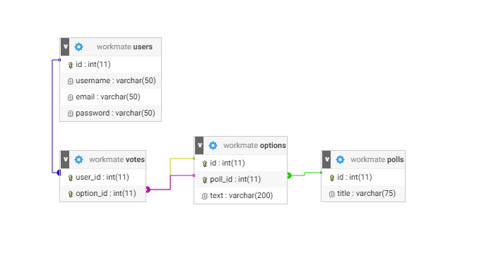

Project Details
Back to menuThe Databases
Right now, Workmate has 4 databases. Users, Polls, Options and Votes. The relationship view of all the tables in our database looks like this.  A poll has an id and a title. Each option of a poll holds a reference to a poll. The option itself also has an id and a text. A vote holds a reference to the user that voted, the option that was voted on, and in turn also the poll that that option was a part of.
@alexanderameye alexanderameye@gmail.com